Architecture
Internal dependencies only. External crates are omitted on purpose: a diagram meant to explain how godmode-core is put together should not be mostly tokio and serde.

site/diagrams/architecture.mmd, not the rendered SVG.
Internal dependencies only. External crates are omitted on purpose: a diagram meant to explain how godmode-core is put together should not be mostly tokio and serde.

site/diagrams/architecture.mmd, not the rendered SVG.